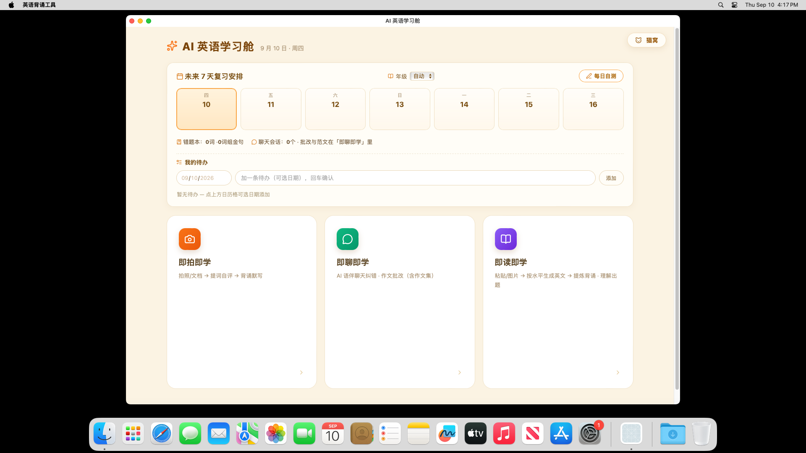

端侧离线 AI 英语背诵工具 · 2026 上海开源软件应用创新大赛 · 开源 AI 工具赛道
项目负责人：康容恺（上海师范大学） | 代码许可：Apache-2.0 | 文档日期：2026-09-26
中学生英语学习里，真正耗时间的环节不是背，而是整理：一篇课文读完后，学生要逐个查词、判断哪些是考纲词、哪些已经会了、哪些是熟词僻义， 再抄成清单，最后才开始背。这套手工流程动辄二三十分钟，且高度依赖个人经验——结果是清单与实际需要错位：把已经掌握的基础词抄了一堆，真正该攻的搭配和语境义反而漏了。
| 类型 | 做法 | 错位点 |
|---|---|---|
| 词表类 App | 平台预设词书，学生按既定顺序刷 | 与学生手上这篇课文脱节；无法利用"阅读中遇到"的记忆优势 |
| 云 API 类 AI 工具 | 把课文上传给大模型，返回生词表 | 隐私风险（学生作文、试卷上传第三方）；断网不可用；按量计费 |
| 通用 AI 聊天 | 对话里让模型"给我提炼生词" | 输出不稳定、无分层依据、无记忆闭环，用完即弃 |
把"整理"这一环完全自动化，并且让分层依据是可解释、可复核的：每个词都标注归属（考纲 / 拓展）、CEFR 级别、文中义与词典全义的区别； 软件不替学生拍板"这个词你该会"，而是本着你自己的 ✓/✗ 自评与默写结果收敛——宁多勿少，精简交给学习行为。

┌────────────────────── 全部在本机运行, 无任何上传 ──────────────────────┐
输入 │ │
───── │ ┌───────────────┐ 结构化提炼 ┌──────────────────────────────┐ │
粘贴文本 ─────────┼──▶│ Node 零依赖 │ ──────────────▶│ llama.cpp + Gemma 4 E2B │ │
📷 照片 ──RapidOCR┼──▶│ 后端 :8804 │◀──── JSON ──────│ (Q4_K_M 2.9G + mmproj 视觉) │ │
📄 PDF/Word ──────┼──▶│ │ └──────────────────────────────┘ │
│ └───────┬───────┘ │
│ │ 规则层 (确定性, 不依赖模型记忆) │
│ ├─ 词书机械扫描: 全文词 × 主词书 → 归属(考纲/拓展) │
│ ├─ CEFR 分级: 年级门槛过滤 + 熟词僻义识别 │
│ └─ 语境义回填: 词出现在词组/搭配区时按语境给义 │
│ ▼ │
│ 背诵清单(生词/词组/金句/搭配/语法) │
│ ▼ │
│ 候选自评 → 默写判卷 → 记忆层(SM-2) → 每日自测 ← 浏览器 localStorage │
└───────────────────────────────────────────────────────────────────────┘
| 决策 | 理由 |
|---|---|
| 端侧模型而非云 API | 目标场景（学生日常学习）里隐私与"随时可用"是硬需求；Gemma 4 已改为 Apache-2.0，商业与再分发无阻碍 |
| llama.cpp 而非 Ollama | 可直接挂 mmproj 做多模态（拍照识别），且能塞进单文件夹一体化分发；Ollama 保留为可选回退路径 |
| Node 零依赖后端 | 不需要 npm install，clone 下来就能跑——把"陌生人 5 分钟能用"作为一等目标 |
| 词书过滤用规则而非模型 | "这个词是不是考纲词"必须确定性、可复现；模型只负责语言理解，判断交给规则层与词书数据 |
| 学习记忆放浏览器 | 学生数据零落盘、零上传；代价是清浏览器数据即重置（已在文档中明示） |
后端对 Python 采取降级优先的探测链：内嵌 macOS Python → 内嵌 runtime\python → ES_PYTHON 环境变量 → 本机候选 → python3/python；
全部找不到时，照片 OCR 与文档解析自动降级，粘贴文本与视觉模型链路不受影响。模型与引擎不随仓库分发，由 tools/ 下脚本按
sha256 逐字节校验从上游获取；无模型时软件仍可启动（界面、词书、默写、记忆层全部可用）。
| 场景 | 用法与价值 |
|---|---|
| 学生自学（主场景） | 课后把课文 / 试卷阅读拍照进软件 → 20 秒内得到按自己水平筛过的背诵清单 → 当天默写 + 次日进入 SM-2 复习排程。把"整理"这一环从二三十分钟压到几十秒。 |
| 教师布置与讲评 | 老师把自己选的阅读材料一键生成清单（可复制为文本发群），学生端导入同一篇材料即可对齐；当前版本的班级功能尚未实现（见第五节）。 |
| 无网 / 弱网环境 | 校园网受限、机房不联网、家庭宽带不稳的场景完全可用；模型与词书都在本机。 |
| 隐私敏感场景 | 学生作文、试卷、成绩相关信息全程不出机器——这是很多学校愿意采用本地工具而非云服务的关键理由。 |
| 面向开发者的复用 | "清单 → 默写 → SM-2 排程"这套记忆内核与词书构建流水线（scripts/）都是独立可复用的：其他教育类开源项目可直接接入自己的词表。 |
已有方案：同类背单词 App 与 AI 学习工具普遍把文本上传至云端模型。
不足：隐私外泄风险、断网不可用、按量计费、校园网络受限时不可用。
本项目：Gemma 4 E2B（Apache-2.0）经 llama.cpp 在本机 GPU 推理，实测 8–20 秒/篇（RTX 5060 Laptop 8GB，约 67 tok/s）；
断网可用、零调用费用、数据不出机器。
已有方案：让模型直接输出"本课生词"，结果依赖模型对"学生水平"的猜测。
不足：不可解释、不可复现、无法对应各地考纲差异、漏掉"认识但新义项没学过"的词。
本项目：
① 考纲层——全文词与主词书做机械扫描比对，确定性地标注"考纲 / 拓展"归属；
② 分级层——CEFR 级别 + 年级门槛（如高一≥B1、高二高三≥B2）过滤确定掌握的入门词；
③ 历史层——已掌握的词自动掠过，错过的词优先复现；
④ 熟词僻义识别——一词多义时（如 screen 名词 A2 / 动词 B2），低义项已掌握而高义项未学，则保留并标记。
已有方案：多数 AI 学习工具止于"生成清单"。
本项目：清单 → 候选自评 → 默写（中↔英双向，AI 容错判卷，题目含原文例句挖空）→ 错题池 → SM-2 隔日复习排程（1→6→15→38→95 天）
→ 掌握三分（✅/🔶/🚫）→ 每日自测（≤30 题，含防遗忘抽查）。这一整套以开源形式提供，可被其他教育项目复用。
所有词书均由 scripts/ 下构建脚本从明确许可的公开数据源重建：高考 / 中考 / 四六级来自 moread-content（MIT）+ ECDICT（MIT）聚合，
CEFR 分级来自 Words-CEFR-Dataset（MIT）。
交叉验证证据：本项目生成的高考词表（3837 词）与 ECDICT 自带的 gk 考试标签（3677 词）重合 3662 词，覆盖率 95.4%——
两份互相独立的数据源彼此印证，说明词表可信度可复现、可检验，而非单一来源的"黑箱词表"。
提供 Windows（WebView2 壳）与 macOS（.app / .command）桌面壳、一键启动脚本（含显存检测与自动降级）、单文件夹一体化分发； 模型与引擎的获取脚本内建 sha256 校验与断点续传。目标是让不写代码的老师也能装上就用。
按赛事要求，如实标注完成程度（自评百分比，以"可交付可用"为标准）。
| 模块 | 完成度 | 说明 |
|---|---|---|
| 文本输入 → 五板块提炼 | 100% | 端侧模型结构化输出，长文自动切块合并 |
| 照片 / 文档输入 | 90% | RapidOCR + 视觉双路径已通；双栏排版的分栏列切分未完成，复杂双栏可能串行 |
| 三层过滤 + 熟词僻义 | 100% | 规则层确定性实现，含语境义回填 |
| 候选自评交互 | 100% | 含"连续 3 次认识自动折叠" |
| 默写（双向 + AI 判卷） | 100% | 中↔英、原文例句挖空、错题循环到全对 |
| 记忆层（SM-2 + 掌握三分 + 每日自测） | 100% | 算法参数仍有调优空间（见下） |
| 词书系统（5 套 + 导入 + 切换主词书） | 100% | 注册表驱动，用户可导入自有词书 |
| 桌面分发（Win / macOS） | 85% | 两平台壳与一体化包已可用；单文件 Electron 安装包未做 |
| 学习统计报表 | 30% | 仅基础掌握进度与错题统计，趋势图表未做 |
| 数据导出（家长 / 老师查看） | 0% | 未实现 |
| 老师端（建班 / 布置 / 统计） | 0% | 未实现，规划在下一阶段 |
| 移动端 App | 0% | 未实现（架构上模型同构可用，需按平台重写壳） |
| 多省考纲词书自动获取 | 0% | 未实现；因各地考纲多为出版社出版物，需作者自行获取授权 |
整体自评：核心链路与记忆闭环 100% 可用；工程化分发约 85%；外围（统计 / 导出 / 老师端 / 移动端）基本未做，约占规划总量的四分之一。
| 项 | 说明 |
|---|---|
| 代码许可 | Apache-2.0（含专利授权条款，见仓库 LICENSE / NOTICE） |
| 第三方组件 | 逐条实测上游 LICENSE 原文并记录于 THIRD_PARTY_NOTICES.md：Gemma 4（Apache-2.0）、llama.cpp（MIT）、PaddleOCR / PaddleX / RapidOCR（Apache-2.0）、ECDICT / moread-content / Words-CEFR-Dataset（MIT）、Lucide（ISC） |
| 模型分发 | 模型权重与推理引擎因体积不随仓库分发，由脚本从上游获取并做 sha256 校验；如随分发包一并提供，将附 Apache-2.0 全文与版权声明 |
| 版权隔离 | 各地官方考纲词汇手册（如上海译文出版社出版的词汇手册）不随仓库分发；软件提供"导入自有词书"能力由使用者自备原件。仓库内词书均来自 MIT 许可的公开数据源 |
| 隐私 | 程序不发起任何上传请求；学习数据仅存本地浏览器 |